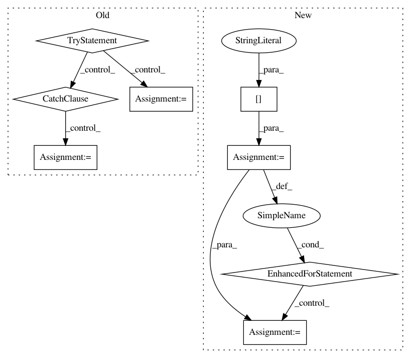

e1cb7c150166e2d911c65f1210a5023089f696c1,utils/text/__init__.py,,text2phone,#Any#,22
Before Change
"""
Convert graphemes to phonemes.
"""
try:
ph = epi.trans_list(text, normpunc=True)
except:
ph = None
return ph
def phoneme_to_sequence(text, cleaner_names):
After Change
punctuations = re.findall(pat, text)
ph = phonemizer.phonemize(text, separator=seperator, strip=False, njobs=1, backend="espeak", language="en-us")
// Replace \n with matching punctuations.
for punct in punctuations[:-1]:
ph = ph.replace(" \n", punct+"| ", 1)
ph = ph[:-1] + punctuations[-1]
//except:
// ph = None
return ph
In pattern: SUPERPATTERN
Frequency: 3
Non-data size: 8
Instances
Project Name: mozilla/TTS
Commit Name: e1cb7c150166e2d911c65f1210a5023089f696c1
Time: 2019-01-16
Author: egolge@mozilla.com
File Name: utils/text/__init__.py
Class Name:
Method Name: text2phone
Project Name: senarvi/theanolm
Commit Name: bcf723a2f67a372e6b03a453149a82ecf2766fff
Time: 2015-12-24
Author: seppo.git@marjaniemi.com
File Name: theanolm/network.py
Class Name: Architecture
Method Name: from_state
Project Name: mozilla/TTS
Commit Name: b9629135db173344eef4316136542b49b00b9808
Time: 2019-01-16
Author: egolge@mozilla.com
File Name: utils/text/__init__.py
Class Name:
Method Name: text2phone